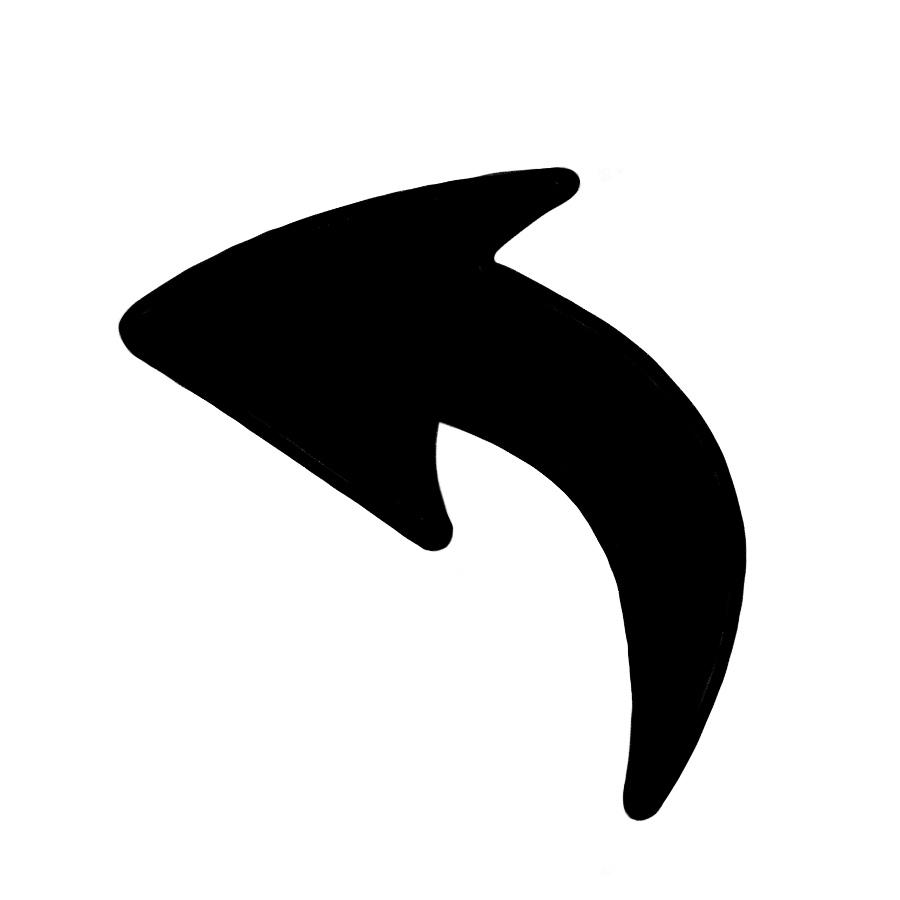
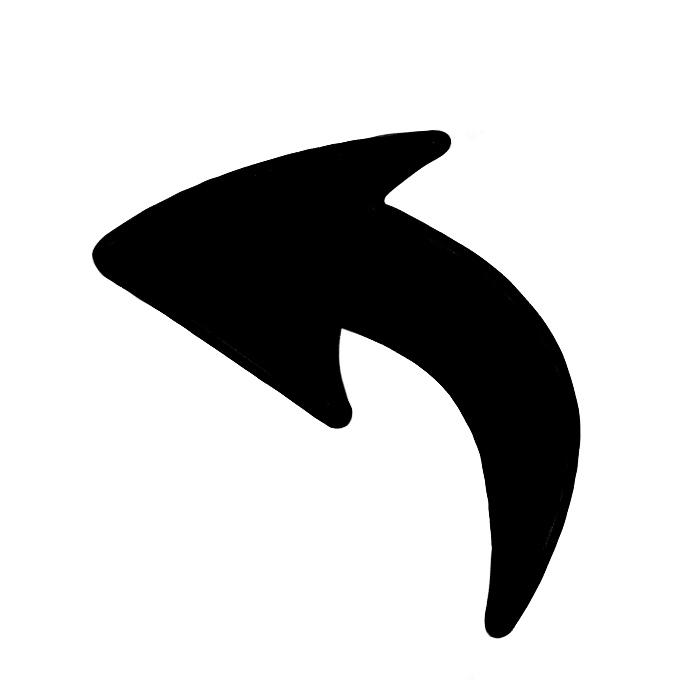
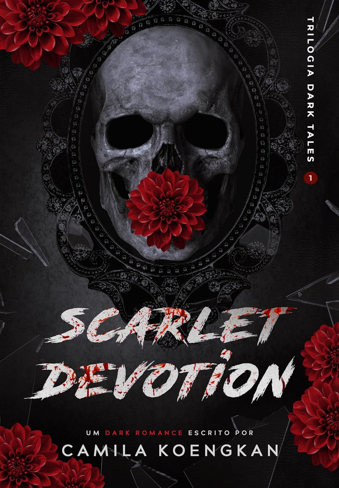

Escolheste mais respostas b)!
"Scarlet Devotion" de Camila Koengkan é um reconto dark da história "Capuchinho Vermelho", no qual seguimos a personagem Maxine, a qual se acaba por envolver com o enigmático Lobo de Harlow. Conforme o romance avança, segredos sombrios emergem, conduzindo ambos os personagens por um caminho perigoso de desejo e intriga, onde o amor pode ser tanto uma salvação como uma perdição. Com uma mistura envolvente de romance e suspense, este livro mergulha os leitores numa história de paixão proibida, intriga e redenção, onde o perigo espreita a cada esquina.
 Compra em Português BR